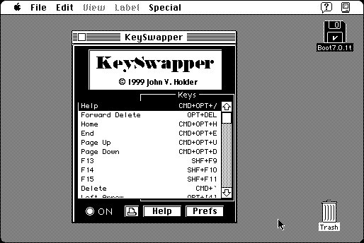

Download
KeySwapper1.11.zip (139K) KeySwapper 1.11 repackaged into a zipped hfs disk image and checksum file. The disk image can be mounted with Mini vMac.
KeySwapper1.11.sea.hqx (217K) KeySwapper 1.11 in the original format.
copyright: John V. Holder
mod date: Oct 29, 1999
license: shareware
last known url
(gone)
“will allow you to use any key(s) you like to emulate other keys that your computer may not have (such as the Forward Delete key, the Page Up key, the End key, function keys F13-F15, Delete, Arrow keys, etc).” For System “7 on up”.

If you find these downloads useful, please consider helping the Gryphel Project, which hosts them.
Here are the md5 checksums for the downloads, signed with Gryphel Key 5:
--------- GRY SIGNED TEXT --------- 26a4ffb9e78754cfaff8bede0d06338c KeySwapper1.11.zip f715819627c9440fec3558a249667cf9 KeySwapper1.11.sea.hqx ------- BEGIN GRY SIGNATURE ------- Gry/4Xa8CFcUzxdN/It0r/zhV0fIWrkHmqLkpB5ldzGMVopoOSuJhOx9f7NActCh BxWxrnGb9DS8NeTHxOBApiKa320IWGsPtBwygylQGc28o2LKEQl4CpOWeLZ2x9fy qvHuglnWFcase9yfrXYz8umNGmh6d3sYftOXq60g+AWqt7ihXNQcfkSK+fbGr5dY -------- END GRY SIGNATURE --------